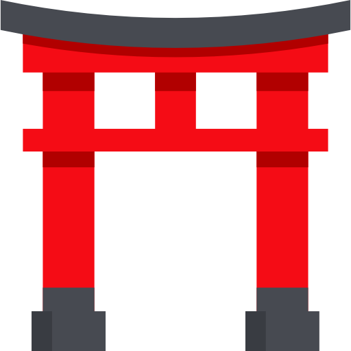
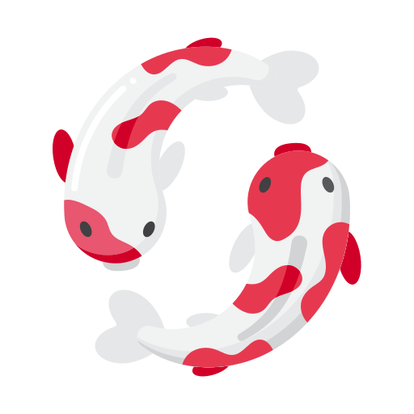

SUSHI
Guide


by Maria João Dutra Rosa

WELCOME
Welcome to the Sushi Guide!
Here you will find all the information you need to know about sushi.
From the history of sushi to the different types of sushi, you will find everything you need to know about this delicious Japanese dish.
-

Origins in Southeast Asia
Sushi’s roots trace back to an ancient preservation method called narezushi in Southeast Asia, where fish was salted and fermented with rice to keep it fresh. This practice spread to China and then to Japan around the 8th century.
-
Early Japanese Sushi (Narezushi)
In Japan, narezushi evolved as both a preservation method and a food. The rice was initially discarded, and only the fermented fish was consumed. Over time, the Japanese began to eat the rice along with the fish.
-
The Birth of Vinegared Rice (Mid-17th Century)
By the Edo period (1603–1868), the process was refined further. Instead of relying on fermentation, cooks used vinegar to flavor the rice, which also acted as a preservative. This marked the creation of oshizushi (pressed sushi) and other early forms.
-
The Invention of Nigiri (Early 19th Century)
In the early 19th century, Hanaya Yohei, a sushi chef in Edo (modern-day Tokyo), revolutionized sushi by creating nigiri sushi. This fast-food style combined a hand-pressed rice ball with a fresh slice of fish, making sushi more convenient and popular, especially in busy urban areas.
-

Post-War Globalization
After World War II, sushi began spreading globally, particularly in the U.S. and Europe. The introduction of rolls like the California Roll (featuring avocado and imitation crab) helped make sushi more accessible to international audiences.
-
Modern Sushi
Today, sushi is a beloved culinary art form worldwide, with countless variations, from traditional nigiri and maki to innovative fusion rolls. Despite its evolution, sushi retains its cultural significance and connection to Japan's culinary heritage.
Sushi Types
Click on the plates to see the different types of sushi
GALLERY

Uramaki California Rolls
An "inside-out" roll with rice on the outside, often coated with sesame seeds or roe, and seaweed on the inside.

Nigiri
Hand-formed sushi with a small ball of rice topped with a slice of fish or seafood, sometimes garnished with wasabi or a dab of sauce.

Spicy Tuna Maki Rolls
Traditional sushi rolls made by wrapping fish, vegetables, and rice in seaweed, then sliced into bite-sized pieces.

Nigiri
Hand-formed sushi with a small ball of rice topped with a slice of fish or seafood, sometimes garnished with wasabi or a dab of sauce.

Temaki
Cone-shaped sushi roll filled with rice, fish, and vegetables, wrapped in seaweed. It's designed to be eaten by hand.

Spicy Tuna Maki Rolls
Traditional sushi rolls made by wrapping fish, vegetables, and rice in seaweed, then sliced into bite-sized pieces.